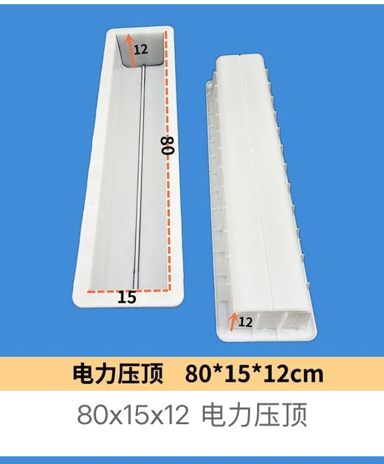
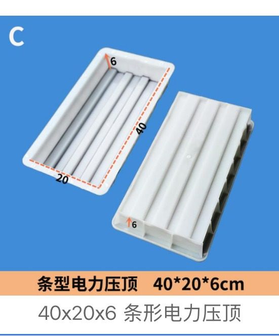
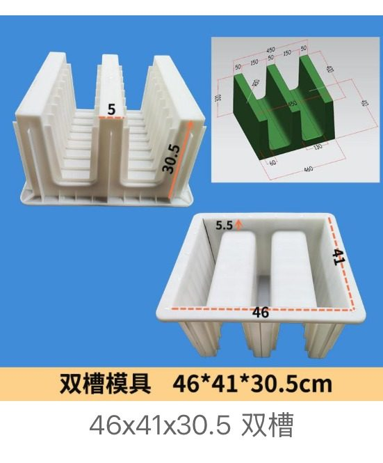

Representative Power Engineering Moulds
Six selected examples from the latest power engineering screenshots, covering marker, coping, cable well cover and utility trench components.

Power Coping Mould
电力压顶 · 80 × 15 × 12 cm

Strip Power Coping Mould
条型电力压顶 · 40 × 20 × 6 cm

U-Channel Utility Mould
U槽模具 · 50 × 34 × 10 cm

Double-Arc Power Coping Mould
电力压顶（双圆弧）· 100 × 25 × 20 cm
U-Channel Utility Mould
U槽模具 · 50 × 30 × 15 cm

Double-Slot Utility Mould
双槽模具 · 46 × 41 × 30.5 cm